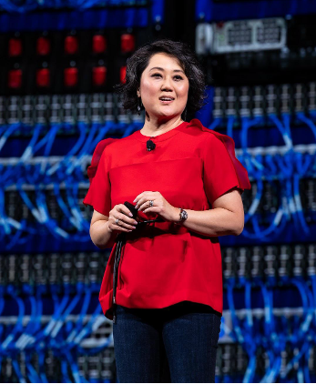

DataEd 2025 Program
We're excited to share our full program with you. Please come to room Bellevue to join us!
| Time | Program | Presenter and Title | Materials |
| 8:30 AM | Walk-in | Arrive and get settled! | |
| 8:45 AM | Opening | Remarks from the DataEd Workshop Chairs. | |
| 9:00 AM | Keynote + Q&A | Academic Keynote: mini Hive, Major Learning: Building SQL-on-Hadoop Engines in the Classroom Prof. Dr. Stefanie Scherzinger, Universität Passau. |
|
| 9:40 AM | Paper Session 1 | Paper 1: Teaching Large-Scale Data Management to Large Cohorts of Undergraduate Students. Lennart Behme, Gereon Dusella, Rudi Poepsel Lemaitre, Alexander Borusan and Volker Markl. |
|
| 9:55 AM | Paper 2: Teaching SQL with Simplicity: A Shift from Relational Algebra to Canonical Databases. Nicoleta Preda and Louis Jachiet. |
||
| 10:10 AM | Paper 3: Making a Case for Visual Feedback in Teaching Database Schema Normalization. Christoph Köhnen, Ute Heuer, Jens Zumbrägel and Stefanie Scherzinger. |
||
| 10:25 AM | Paper 4: Skills-Based Evaluation in an Introductory Data Management Programming Course for Non Computing Majors. Brian Harrington, Katherine Lambert, Leon Lee, Rohita Nalluri, Seyed Sadra Setarehdan, Anagha Vadarevu and Angela Zavaleta Bernuy. |
||
| 10:40 AM | Coffee Break | 20-minute coffee break! | |
| 11:00 AM | Industry Talk | Industry Keynote: In the age of AI, Developers Must be Unicorns and Oracle Database Can Be Your Secret Weapon. Bo English-Wiczling, Senior Director, Oracle Database Product Management |
|
| 11:30 AM | Paper Session 2 | Paper 5: Understanding Help-Seeking Behavior of Students Using LLMs vs. Web Search for Writing SQL Queries. Harsh Kumar, Mohi Reza, Jeb Mitchell, Ilya Musabirov, Lisa Zhang and Michael Liut. |
|
| 11:45 AM | Paper 6: CodeLens: A Generative AI Framework for Automated Feedback on SQL Assignments. Abdulrahman Alrabah and Abdussalam Alawini. |
||
| 12:00 PM | Paper 7: Train Hard, Score High: The Impact of Practice Tests on SQL Learning. Andrzej Wójtowicz, Anna Stachowiak and Emilia Pankowska. |
||
| 12:15 PM | Paper 8: Not-So-Bitter Pill to Swallow: Slipstreaming Memory Safe Programming via Rust as part of a Database Systems Course. Mohammed Suhail Rehman, Aaron Elmore and Raul Castro Fernandez. |
||
| 12:30 PM | Closing | Remarks from the DataEd Workshop Chairs. | |
| 12:32 PM | Lunch! | It's lunch time! Join the SIGMOD lunch (12:30-1:30PM). |
Keynotes
We're very happy to announce that we will have two keynotes at DataEd 2025! Our academic keynote speaker is Stefanie Scherzinger and our industry keynote speaker is Bo English-Wiczling. Learn more about them and what they will be talking about below!
Stefanie Scherzinger
mini Hive, Major Learning: Building SQL-on-Hadoop Engines in the ClassroomTwenty years ago, writing MapReduce jobs from scratch was both a marketable skill and a staple in Big Data education. When Facebook introduced Hive in 2008, it allowed users to express complex MapReduce workflows using SQL-like queries. Naturally, Hive - and the broader idea of SQL-on-Hadoop - quickly gained traction.
Even today, it remains valuable for students to understand how MapReduce works. But to help them appreciate the power of declarative query languages, we designed a programming project called miniHive. In this project, students build a prototype SQL-on-Hadoop engine from scratch: using Python, they parse SQL queries into relational algebra, apply classic optimisations such as selection pushdown and join reordering, and implement the physical operators as MapReduce jobs. This also gives them the opportunity to explore how MapReduce workflows can be optimised in practice.
In this sense, miniHive is a database systems implementation class in disguise, where major learning happens through building a "mini" system.
This keynote presents the miniHive project and shares insights from seven course iterations across three universities. We reflect on the challenges students face, often for the first time, when developing code on a platform that differs substantially from the target production environment: Code that runs locally may fail under HDFS and MapReduce, and debugging in this setting is no small feat. We also discuss teaching challenges such as automated testing at scale and plagiarism detection.
Our aim is to share practical lessons from teaching SQL-on-Hadoop through hands-on system building, and to show how miniHive helps students gain a deeper understanding of both declarative and procedural approaches to data processing.
 Stefanie Scherzinger is a Full Professor of Computer Science at the University of Passau. She earned her PhD at Saarland University and began her career as a software developer at IBM and Google. Her time in industry taught her a lasting lesson: nothing beats the experience of building real systems. In 2012, she returned to academia, joining OTH Regensburg, a university of applied sciences. Motivated by her industry experience, she launched the miniHive programming project in 2018 as part of a Master's-level database course. The project has also been featured in SIGMOD Record as a practical example of systems-oriented database education. After joining the University of Passau to lead the Scalable Database Systems group, Stefanie and her team further refined miniHive, developing an automated framework for plagiarism checks and testing. The project has since travelled across borders and has been taught at Charles University in Prague as part of a teaching exchange. To date, several hundred students have successfully built their own working miniHive engines.
Stefanie Scherzinger is a Full Professor of Computer Science at the University of Passau. She earned her PhD at Saarland University and began her career as a software developer at IBM and Google. Her time in industry taught her a lasting lesson: nothing beats the experience of building real systems. In 2012, she returned to academia, joining OTH Regensburg, a university of applied sciences. Motivated by her industry experience, she launched the miniHive programming project in 2018 as part of a Master's-level database course. The project has also been featured in SIGMOD Record as a practical example of systems-oriented database education. After joining the University of Passau to lead the Scalable Database Systems group, Stefanie and her team further refined miniHive, developing an automated framework for plagiarism checks and testing. The project has since travelled across borders and has been taught at Charles University in Prague as part of a teaching exchange. To date, several hundred students have successfully built their own working miniHive engines.
Bo English-Wiczling
In the age of AI, Developers Must be Unicorns and Oracle Database Can Be Your Secret Weapon.Employers look for new hires with experience and knowledge of the technical tools and principles used most around the world, as well as familiarity with new technologies that are constantly emerging. Many employers have started to look for developers that can do it all – the elusive “unicorn”. These developers need to know emerging technologies including AI, how to build front ends, how to set up the middle tier, and how to set up back ends including infrastructure, networking and databases. This is no simple feat for a new developer just entering the workforce. At Oracle, we’re preparing developers to be a jack of all trades by making it easy to set up, use and expand databases that can support all the workloads and data types demanded by AI and emerging trends. Learn about free resources available for educators, how universities and customers have implemented Oracle into their ecosystem, and how you can do this all with support from the engineering teams at Oracle Database.
Bio: Bo English-Wiczling is a Senior Director in the Oracle Database Product Management team leading Database Developer Relations and is transforming the way developers use Oracle Database products and services. She joined Oracle almost 8 years ago from Amazon and has more than 29 years of experience in Tech, led large-scale product development teams, created enterprise departments, programs and startups from scratch, and founded several employee advocacy groups.
Bo enjoys solving impossible challenges, including the first mobile phone activation platform at Best Buy used by 29 different Telcos across NA and Europe; the first Anti-Money Laundering platform at Amazon for millions of 3rd party marketplace sellers; and the first Developer Relations org in Oracle that transformed the culture at Oracle for interacting with millions of developers worldwide.
She started her career as a web developer, and authored multiple applications for companies looking for an online presence, such as Allianz and American Heart Association. She has a double major in Computer Science and Philosophy from the University of Minnesota. Bo is a passionate advocate for AI advancement, open source communities, under-represented affiliations, and serves as the Board Advisor for Oracle’s Asian Professional Leadership (OPAL) employee resource group. She is also a Certified Scrum Master and Certified Agile Coach.
Bo currently lives in Seattle, WA with her husband and 2 Chihuahuas. In her spare time, she likes to collect hobbies and make things, wander the earth, race sports cars, and she is an enthusiastic foodie. She is also especially fond of peaty Scotches.